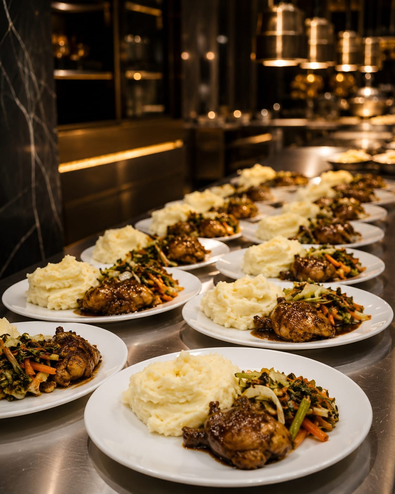
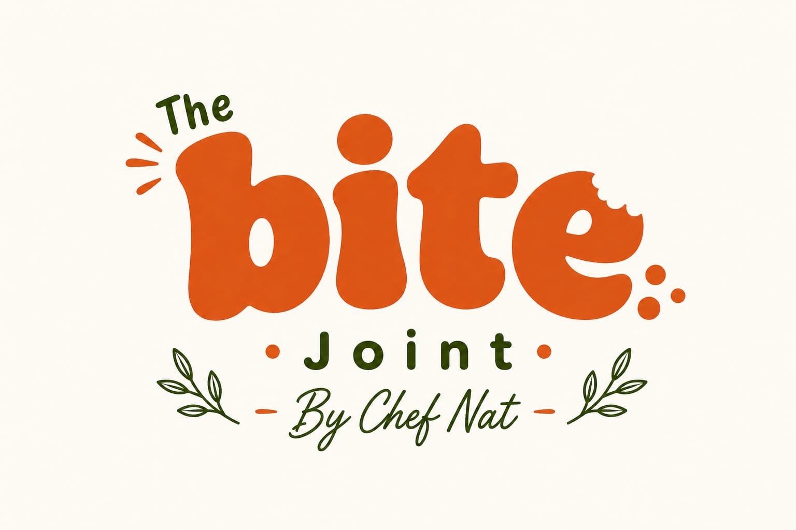

The person behind the food.
Passion, precision and bold flavour — every single time.
The Story
Chef Nat's Culinary Services was built on a simple belief: food should be an experience, not just a meal. Whether it's an intimate private dinner, a large catering event, a custom celebration cake or a loaded kota from The Bite Joint — every creation carries the same level of care and intention.
Based in Johannesburg and serving the surrounding areas, Chef Nat brings together four distinct culinary identities under one vision: luxury private dining, event catering, handcrafted pastry, and bold street food.
Private Chef
Luxury in-home dining experiences. Custom menus designed around your guests, your occasion and your taste. From intimate dinners to special celebrations.

Catering
Full-service catering for weddings, corporate events and private functions. Plated service, buffets and everything in between.

The Bite Joint
Bold street food with attitude. Burgers, kota, wings and more. The flavour-forward side of Chef Nat's world.
Work With Chef Nat
All bookings, enquiries and custom orders are handled directly via WhatsApp for a fast, personal response. Based in Johannesburg and available for events across the region.